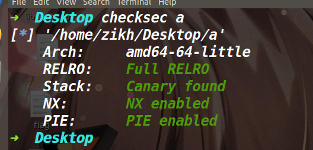
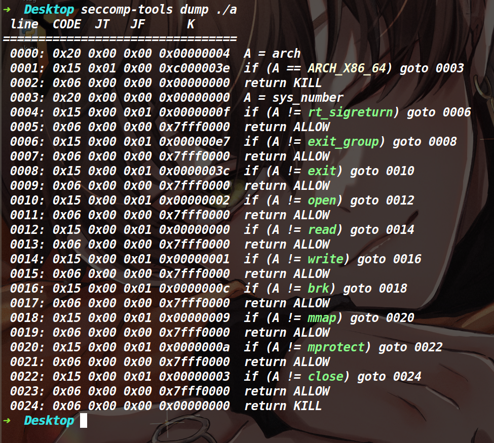

关于tcache stashing unlink attack的学习总结
tcache stashing unlink attack
介绍：在2.29的libc版本中，进行了unsorted bin的双向链表完整性检查。因此unsorted bin attack也就失效了，不过在libc2.29的版本中tcache stashing unlink attack却可以达到类似的效果(在一个任意地址写入一个libc地址)。
原理：在2.29的libc中，如果我们需要的chunk位于了small bin里面，当我们将chunk从small bin拿出来的时候，还会去检查当前small bin链上是否还有剩余堆块，如果有的话并且tcache bin的链上还有空余位置(tcache bin不能为空)，就会将剩余的那个堆块给链入到tcache bin中。而将small bin中的堆块链入到tcache bin中的时候没有进行双向链表完整性的检查，此时攻击那个即将链入tcache bin的堆块的bk指针，即可向任意地址写入一个libc地址。
注意：上述有一个看似矛盾的地方，如果tcache bin不为空并且没有满，才会将small bin里的堆块给链进来，但是tcache bin不为空的话，正常情况下会直接从tcahce bin里取，并非去small bin里找。但是calloc函数有个特性，它不会从tcache bin里取堆块，因此该攻击必须要利用calloc函数才行。
适用版本：目前适用于所有带tcache的glibc版本(2.26–2.36)
使用前提：
- 能使用calloc分配堆块
- 可以控制small bin中的bk指针
- small bin中最少要有两个堆块
攻击效果：在任意地址写一个Libc地址(main_arena+96)
利用思路：
- 先进行libc地址以及堆地址的泄露(libc地址不是必须的，而堆地址是必须的，因为我们伪造bk指针的时候，不能破坏fd指针，需要获取堆地址，重新还原fd指针)
- 然后将tcache bin中只留6个堆块(这样small bin链入tcache bin后，tcache bin就会直接装满，防止程序继续通过我们篡改的bk指针继续往下遍历)
- 再做出至少两个位于small bin中的chunk(可以通过切割unsorted bin的方式，让剩余部分的堆块进入small bin或者当遍历unsorted bin的时候，会给堆块分类，让其小堆块进入small bin中)
- 利用溢出或UAF+edit等手段，篡改位于small bin中的倒数第二个堆块的bk指针为我们想要写入main_arena+96的地址 注意伪造bk的时候一定不能破坏fd指针
- 最后我们申请一个位于small bin那条链对应size中的chunk，将small bin中的一个chunk申请出来，而small bin链中的另一个堆块则进入tcache bin，在链入tcache bin的期间触发了tcache stashing unlink attack。
该漏洞处的源码如下:
if (in_smallbin_range (nb)) |
相关题目
buu[2020 新春红包题]3
保护策略：


漏洞分析：

存在一个UAF漏洞
存在一个可以溢出的函数(如下)

这里可以直接溢出buf打一个栈迁移，迁移到堆上(提前布置一个rop链)，执行orw来绕过沙箱。
利用思路：
虽然有UAF漏洞并且有edit函数和show函数，但这题没法打tcache poisoning，因为这题申请内存的函数是calloc，这个函数的特性是不从tcache bin中取堆块，因此我们打tcache poisoning也无法从tcache bin链上取出来堆块。而且就算能取出来堆块，也无法绕过沙箱。想绕沙箱就必须去利用那个溢出函数。
溢出函数中存在一个if检查，这里本来用unsorted bin attack的话是很好过检查的，但是在Libc为2.29的版本中对unsorted bin增加了检验双向链表完整性，无法去利用unsorted bin attack 了。不过在2.29有一种手法可以代替unsorted bin attack达到类似的效果，也就是tcache stashing unlink attack(上文对tcache stashing unlink attack做了介绍，这里就不再赘述了)
泄露地址：
因为存在UAF漏洞，配合show函数，可以轻松的泄露堆地址和libc地址。但是为了后续的利用，我们前期需要先伪造两条不同的tcache链(一条用于后续small bin中堆块的链入，一条用于让堆块进入unsorted bin，因为0x410这条链装满了，再释放掉0x410的堆块就会直接进入unsorted bin) 如下图，我们执行两次show函数即可获取libc地址和堆地址。

放入small bin中两个堆块
目前我们在unsorted bin中有一个0x410的堆块，我们先去申请一个0x300的堆块，这样剩下的0x100就会进入unsorted bin中，然后下一次申请0x400的堆块，ptmalloc就会去遍历unsorted bin将原先0x100的堆块放入small bin中。接着如法炮制再申请一个0x400的堆块，释放掉进入unsorted bin，然后申请0x300堆块，将unsorted bin中的堆块进行切割，残留的0x100堆块返回unsorted bin,最后再申请一个不等于0x100的堆块(如果正好相等的话，就直接从unsorted bin里拿出来了，只有不相等才会去遍历，然后给chunk分类)，这时候就又把0x100的堆块放入到了small bin里，而此时small bin中就有两个堆块了。
篡改small bin中的bk指针
因为这道题要触发后门的话，就得让下面这个if成立，我们直接篡改small bin的bk指针为这个qword_4058+2048-0x10的值即可

篡改后small bin的情况如下

最后再申请一个0xf0的堆块即可触发tcache stashing unlink attack。
完事了利用后门，打一个栈迁移，迁移执行流到堆上，执行提前布置好的rop链执行orw即可。我是直接调用了mprotect函数让堆去变成可读可写可执行，然后直接执行orw的shellcode(这里没有难点，就不再具体阐述了)
EXP:
from tools import * |

hitcon_ctf_2019_one_punch
保护策略：
 大致思路：
这道题考察的是tcache stashing unlink attack，不过由于本题开了沙箱，所以最后需要用orw获取flag。
程序给了个后门(可以调用malloc，篡改malloc_hook劫持执行流)，不过需要用tcache stashing unlink attack来触发这个后门，利用libc里的一个gadget(add rsp,0x48;ret)将其写到malloc_hook里，直接控制程序执行流。
利用那个gadget能控制执行流的原因是因为程序询问size的时候，输入到栈里的数据太大了。(如下)

EXP：
from tools import * |

参考文章：
Tcache Stashing Unlink Attack利用思路-安全客 - 安全资讯平台 (anquanke.com)
https://blog.csdn.net/weixin_46521144/article/details/119536209